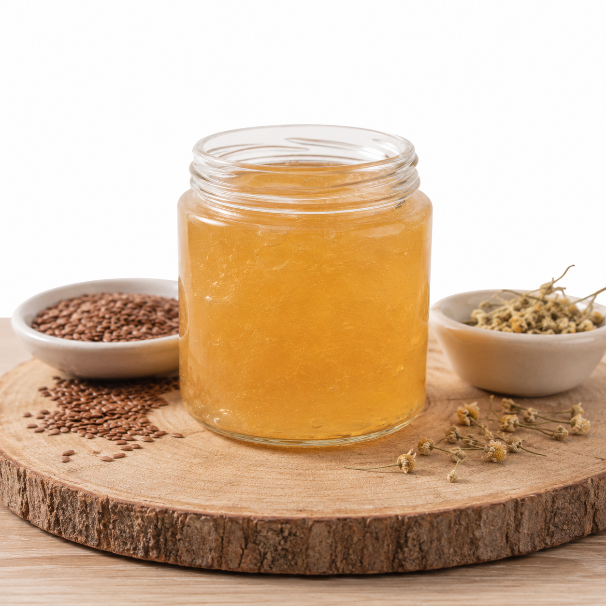
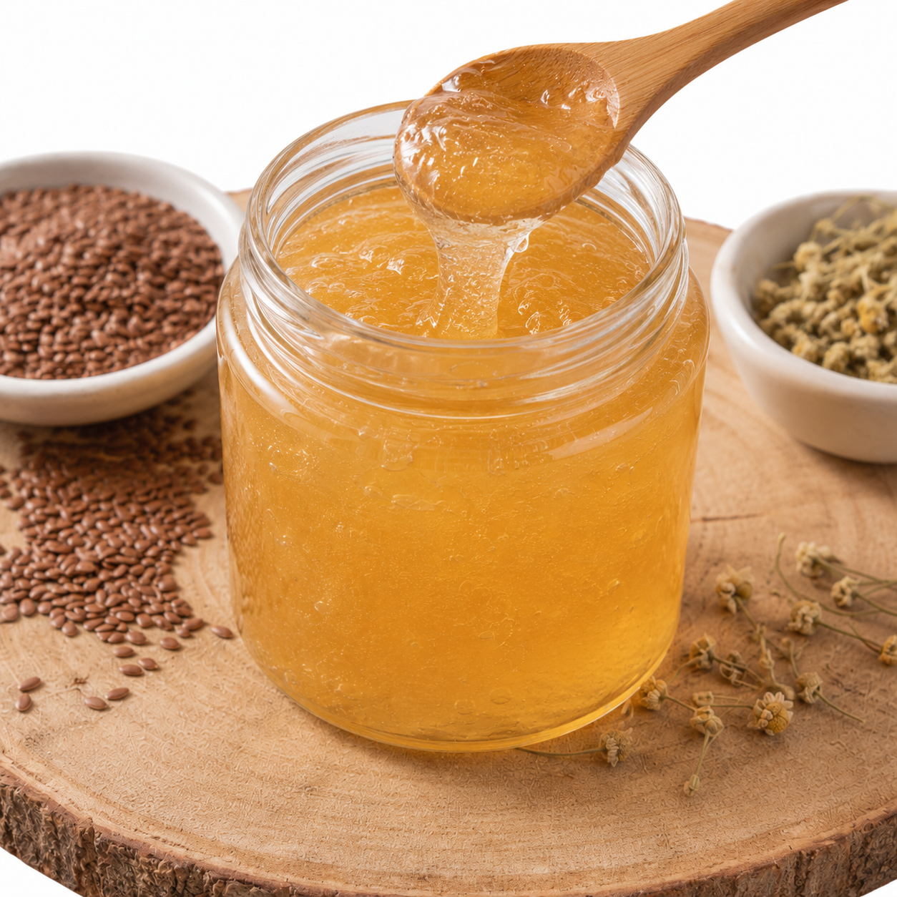
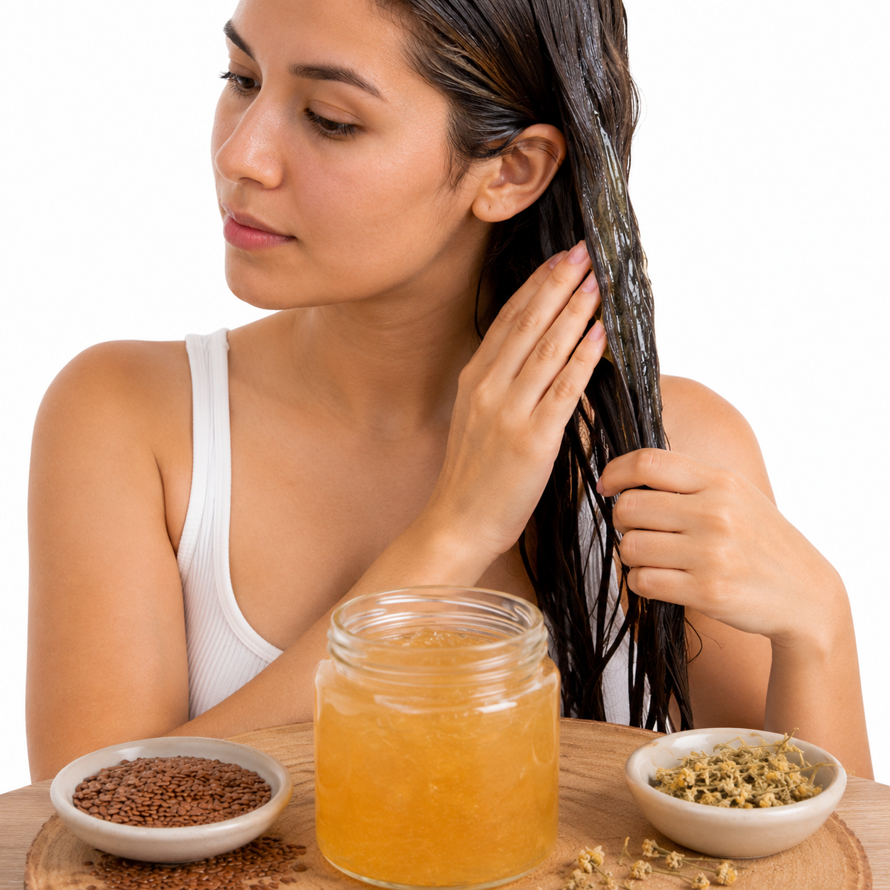
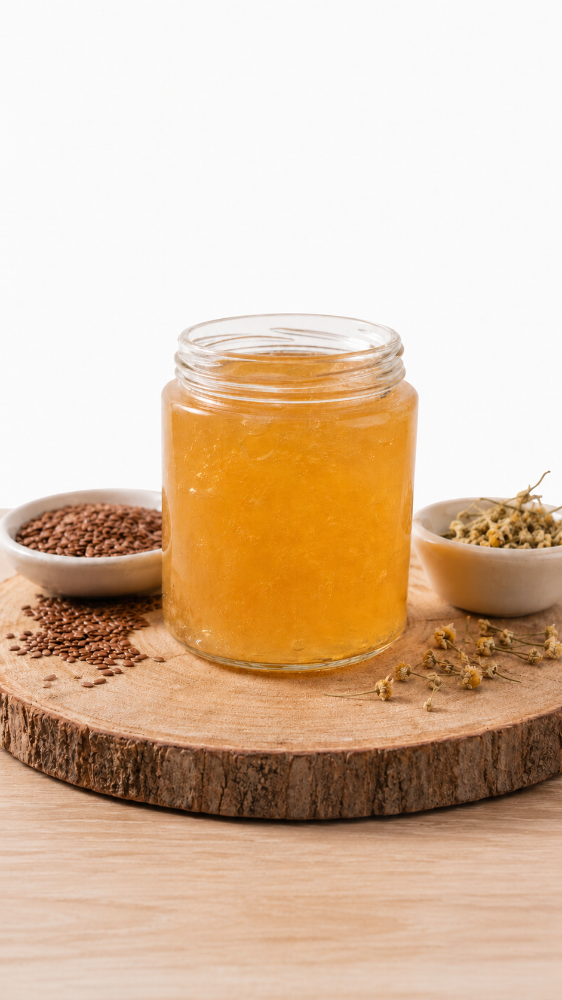

Formula ligera
Su textura tipo gel facilita la aplicación, se distribuye con rapidez y no busca dejar el cabello pesado. Es ideal para rutinas simples despues del lavado o para refrescar el peinado.
LINA transforma una semilla tradicional en una propuesta capilar sencilla, accesible y bien presentada. Nuestro producto esta pensado para hidratar, ayudar a controlar el frizz y realzar la forma natural del cabello sin depender de formulas pesadas.
La fuerza natural de la linaza para el cuidado diario del cabello.
LINA es un gel capilar elaborado a partir de linaza, agua purificada y componentes suaves que ayudan a conservar una textura agradable. La propuesta combina preparacion artesanal, imagen cuidada y una estrategia comercial pensada para venderse en un entorno escolar o local.
Su textura tipo gel facilita la aplicación, se distribuye con rapidez y no busca dejar el cabello pesado. Es ideal para rutinas simples despues del lavado o para refrescar el peinado.
La linaza permite crear una propuesta de bajo costo, con ingredientes faciles de conseguir y un margen razonable para analizar precio, producción y rentabilidad.
La marca se comunica con un tono natural, elegante y confiable, orientado a personas que desean cuidar su cabello con una opción más consciente.
En esta galería puedes ver el proceso completo de aplicación de LINA, desde cómo se distribuye en el cabello hasta el resultado final. Las imágenes muestran su textura ligera, su fácil absorción y el acabado natural que deja, con rizos definidos, mayor brillo y control del frizz.

Gel de linaza natural diseñado para nutrir, definir y cuidar el cabello, aportando hidratación y una apariencia saludable.

Consistencia ligera y suave que permite una aplicación fácil, con fijación flexible y sin dejar residuos pesados.

Se distribuye de manera uniforme sobre el cabello húmedo, ayudando a definir rizos y mejorar la forma natural del cabello.
Cabello más definido, con brillo natural, hidratación visible y control del frizz para una apariencia saludable.
Gel de linaza natural diseñado para nutrir, definir y cuidar el cabello, aportando hidratación y una apariencia saludable.
Consistencia ligera y suave que permite una aplicación fácil, con fijación flexible y sin dejar residuos pesados.
Se distribuye de manera uniforme sobre el cabello húmedo, ayudando a definir rizos y mejorar la forma natural del cabello.
Cabello más definido, con brillo natural, hidratación visible y control del frizz para una apariencia saludable.
La linaza es reconocida por formar un gel natural al hervirse. Esa textura ayuda a cubrir la fibra capilar de manera ligera, dejando una sensacion más suave y manejable.
Ayuda a que el cabello se sienta mas flexible, con menos resequedad y con mejor textura al tacto.
Puede apoyar la forma de ondas y rizos sin crear un acabado rigido cuando se aplica en cantidad moderada.
La película ligera del gel contribuye a ordenar los cabellos sueltos y mejorar la apariencia general.
Deja un acabado más luminoso, especialmente en cabellos opacos o expuestos a calor, sol y contaminación.
Ingrediente principal. Al cocinarse libera mucilagos que forman el gel natural del producto.
Base limpia para obtener una textura uniforme y una aplicacion agradable.
La propuesta contempla refrigeracion y elaboracion por lotes pequenos para cuidar la calidad.
Puede presentarse con una fragancia ligera para mejorar la experiencia sin saturar el producto.
Nuestro proceso esta pensado para ser claro, replicable y fácil de costear dentro del proyecto financiero.
Se revisa la calidad de la linaza y se separan impurezas antes de iniciar la preparacion.
La semilla se hierve con agua hasta obtener una consistencia gelatinosa controlada.
Se separa el gel de las semillas para lograr una textura limpia y facil de aplicar.
El producto se coloca en recipientes limpios, con etiqueta e información baásica de uso.
Se prepara para venta, exposición y explicación de costos, precio y propuesta de valor.
LINA permite conectar creatividad con temas financieros: inversion inicial, costos variables, precio de venta, punto de equilibrio y utilidad estimada.
Los insumos principales son economicos y permiten producir por lotes, facilitando el calculo de costo unitario.
La marca, la presentacion y la explicacion de beneficios elevan la percepcion del producto frente a una mezcla casera comun.
Su formato pequeño funciona para ferias escolares, ventas por encargo y demostraciones dentro del proyecto.
La experiencia de uso fue pensada para que cualquier cliente entienda rapidamente como incorporar LINA a su rutina.
Es tu oportunidad de darle a tu cabello un cambio visible desde la primera aplicación. Con LINA, obtienes un acabado más definido, con brillo natural y una sensación ligera que se nota al instante. Un estilo más cuidado, más fresco y más atractivo sin complicarte la rutina.

Producto capilar natural para suavidad, brillo y definicion ligera.
Nuestro proyecto demuestra que un ingrediente cotidiano puede convertirse en un producto con identidad, estructura financiera y una experiencia de marca convincente.